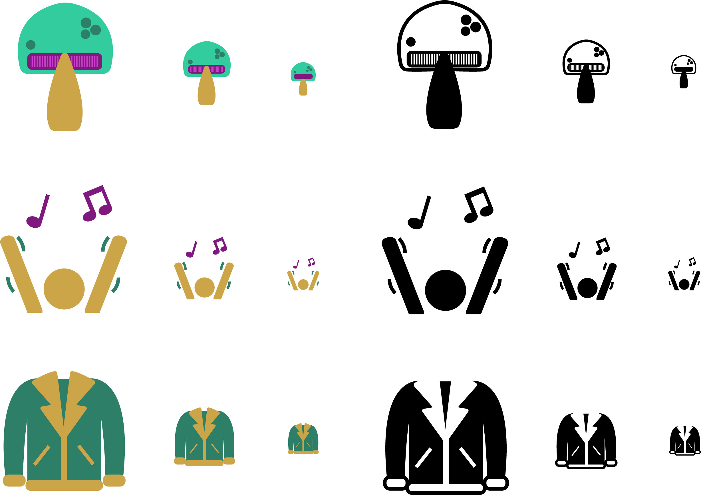
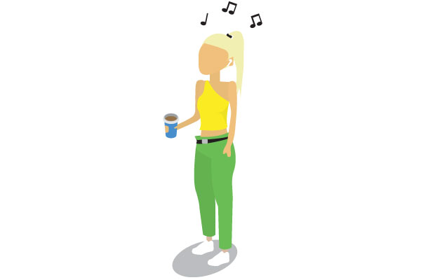

August 21, 2018
Project 3: Article Illustrations


August 21, 2018
Project 2: Scalable Icons

For this project I made 3 different icons representing different aspects of myself. They are meant to be used at multiple scales so I made one version at 128x128px, another 64x64px and the last 32x32px. My first icon is a mushroom because I like eating mushrooms but also because I think that mushrooms can represent nature and I really enjoy being outside. My second icon is a person waving their arms to music. This represents my love for music and going to concerts. My last icon is an aviator jacket. This represents how much I love clothes and fashion.
August 21, 2018
Project 1: Avatar

This is an avatar I created of myself. It was made on an isometric grid in Adobe Illustrator. My avatar has AirPods and music notes above her head because I love music. I also live off of coffee which is why she's holding a coffee cup.